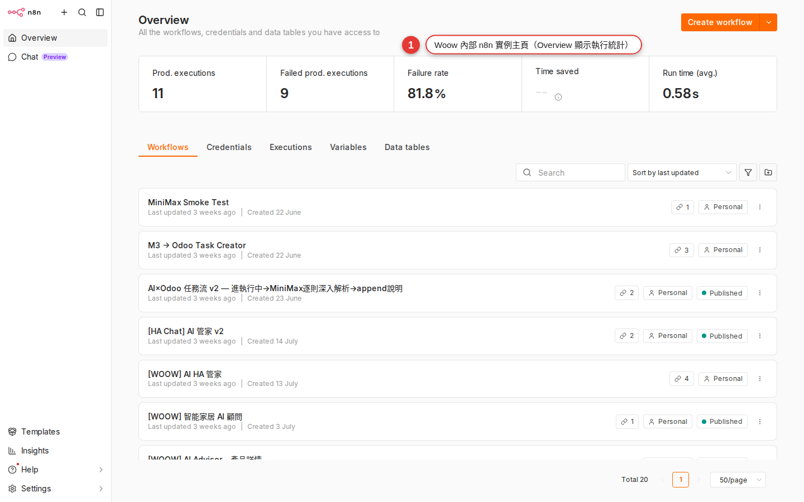

What n8n is, and how it differs from Zapier/Make
The repetitive work you do every day — pasting the calendar into Slack in the morning, copying form entries into a spreadsheet, forwarding a particular email the moment it arrives, adding up last month's sales at month end — can all be handed over to an automation tool called n8n. There is nothing to build in this chapter. It shows you what n8n is, how it differs from the Zapier / Make / Power Automate you may have heard of, and why WoowTech chose it.
Why learn this
Think for a moment about how many things you have done at work today that a computer could really have done by itself:
- In the morning you open Slack and paste today's meetings into the team channel one by one, so everyone knows where you are.
- A customer fills in a Google Form, you open the spreadsheet and copy the data across, and you write them a confirmation email while you are at it.
- An email from a VIP customer lands in your inbox and you forward it to the sales manager straight away, in case it gets missed.
- It is the end of the month, so you open the admin pages of three platforms, pull last month's sales figures, paste them into the report in Excel, and screenshot it for your boss.
These four have one thing in common: the rules are fixed, the data is not. The steps are the same every time; only the content inside them changes. That is exactly what automation tools are best at — you tell it the rules once, and after that it runs itself every day. It does not skip anything, it does not forget, and it does not call in sick.
The automation tool the company picked is n8n (pronounced "n-eight-n", short for "nodemation"). This chapter introduces what it is; the 21 chapters that follow walk you through building workflows that really run.
n8n is automation built like Lego
If n8n has to fit in one sentence, it is this — an automation tool built like Lego.
Every Lego building block has a fixed shape and a set of studs, and once you click them together you have a car or a house. n8n works the same way: it comes with hundreds of ready-made building blocks called "nodes", and each one does a single job —
- one is called
Gmailand reads the mail you receive; - one is called
Google Sheetsand writes a row into a spreadsheet; - one is called
Slackand sends a message to the channel you name; - one is called
Schedule Triggerand gives the workflow a nudge at 8:00 every morning.
Your job is this — drag the building blocks onto the screen and join them with connections. A connection is the direction the data flows in: the mail Gmail reads travels along it to the next building block.
So how is this different from writing code? If you wrote it yourself, you would have to work out how to fetch mail with the Gmail API, which headers to send, and how to parse the JSON that comes back. n8n has already packed all of that into the Gmail building block. All you do is fill in the fields beside it: which account to use, how many recent messages to fetch, and whether to limit it to one sender.

n8n.woowtech.io lands you here, with the sidebar, the workflow list and the action buttons in the top right all in one view.What it can actually do for you
Take the earlier "post the calendar to Slack in the morning" example and translate it into n8n building blocks:
-
The Schedule Trigger building block: a nudge at 8:00 every morning
This is where the workflow starts. It has one job — when the time comes, it sets everything downstream in motion. You can have it run every hour, at a fixed time each day, at 9:00 every Monday, on the 1st of each month, and so on.
-
The Google Calendar building block: fetch every event for today
Connect it with your Google account and tell it to fetch every event between 00:00 and 23:59 today. It sends the events (name, time, location) down the connection to the next building block, one at a time.
-
The Slack building block: send the list to the channel you chose
It catches the list of events from the previous building block, builds one message out of it, and posts it to a channel in your Slack (or sends it to you as a direct message).
Three building blocks and two connections, and "post the calendar automatically every morning" is done. We walk you through doing exactly this, step by step, in Chapter 8. For now, just get a feel for the scale: a workflow is usually three to seven building blocks, and rarely much longer.
n8n vs Zapier vs Make vs Power Automate
n8n is not the only tool that does this kind of work. You have probably heard of, or used, one of the others. This table lays all four out side by side:
| Compared on | n8n | Zapier | Make (formerly Integromat) | Power Automate |
|---|---|---|---|---|
| Editor style | Node graph, flowing left to right | Multi-step list, top to bottom | Scenarios, circles joined by lines | Flow, a vertical sequence |
| Pricing model | The Community edition is completely free to self-host; the Cloud edition is a monthly fee | Billed per task (every node that runs costs one) | Billed per operation (cheaper than Zapier) | By number of flows plus per-user licenses |
| How far you can customize it | Has a Code node (JS/Python), so anything can be changed | Limited: only the Code by Zapier add-on | Has a Functions module, but it is limited | Limited; you work through Power Fx expressions |
| Seeing your data | Open any node to read the JSON going in and out | Only shows the field mapping | Bundles are visualized well | You need debug mode |
| Community & templates | Thousands of public workflows, source published (fair-code / Sustainable Use License) | Thousands of Zap templates | Fewer templates | Mostly enterprise templates |
| Where the data is stored | Self-hosted, all the data stays on your own server | Zapier's cloud | Make's cloud | Microsoft's cloud |
| Who it suits | Technically comfortable companies that want customization and lower cost | Individuals, small teams, anyone using only mainstream SaaS | SMBs that want a good-looking editor | Companies already on Microsoft 365 |
The short version: Zapier for the occasional personal connection, n8n when a company runs things at volume. That is why this handbook is in front of you at work today.
Why WoowTech chose n8n
We evaluated Zapier, Make and Power Automate, and settled on n8n. The reasons come down to these:
-
The data stays in-house
We self-host the Community edition, so n8n runs on our own server. Customer data, internal messages and reports never travel to another company's cloud. That matters for any work that touches customer lists or financial figures.
-
Costs stay predictable
The Community edition is completely free, with no limit on users, on the number of workflows, or on how often they run. The server cost is a small slice of the IT spend we already had, far below the several hundred to several thousand US dollars a month that Zapier / Make would come to.
-
The widest choice of nodes
At the source snapshot, n8n’s integrations page and npm ecosystem listed thousands of integrations and hundreds of community packages; those counts change, so check the live catalogs before relying on a total. Where there is no official node, the
HTTP Requestnode can call any REST API (Chapter 4 shows you how to find one). -
You can write code to fill the gaps
For data handling too complex for a ready-made node, drop in a Code node (Chapter 20) and write a few lines of JavaScript or Python. That escape hatch is freedom Zapier / Power Automate cannot give you.
-
AI Agent nodes are supported natively
n8n ships the LangChain family of AI Agent (Chapter 21) nodes — put GPT / Claude straight into a workflow as a node that makes judgment calls, which works well for front-line customer support, classifying data and summarizing reports. They all go through the company LiteLLM gateway, so AI costs are managed and visible in one place.
-
It fits the tools we already run
WoowTech runs Home Assistant, Podman and k3s. n8n starts with a single Docker/Podman command, and it can greet HA both ways through a webhook (Chapter 22) — HA notices someone in the meeting room, for instance, and asks n8n to open a Meet call.
Where it fits
n8n is particularly good at these kinds of work. If you have something similar on your plate, find your row:
| Scenario | What it looks like | Nodes involved |
|---|---|---|
| Daily / weekly summary reports | At 9:00 each day, pull yesterday's orders and support tickets, turn them into one table, and Slack it to your manager. | Schedule Trigger, the data-source nodes, Set, Slack |
| Automated customer notifications | A customer submits a form → a confirmation email goes out → the record is added to the CRM → sales is notified. | Form Trigger, Gmail, HubSpot, Slack |
| Syncing data across systems | A new row in a Google Sheet → synced to a Notion database and to Airtable. | Google Sheets Trigger, Notion, Airtable |
| Calling an API with no official integration | You use some niche logistics system and n8n has no ready-made node — call it yourself with the HTTP Request node. | HTTP Request, Expression, Set |
| AI as the first line of support | A chat message arrives from the website → AI Agent classifies it, answers the easy questions itself, and passes the hard ones to a person. | Webhook, AI Agent, Slack |
| Automating internal tooling | An employee leaves → their Slack, Google Workspace, GitHub and Notion accounts are closed automatically. | Webhook, a node for each SaaS |
Where it does not fit
To be straight with you, n8n is not the answer to everything. Force it into the situations below and you will regret it:
| Where it does not fit | Why | What to use |
|---|---|---|
| High-frequency trading (hundreds of times a second) | Every n8n run has a startup cost. It is not an engine for real-time, millisecond-level computation. | Write a dedicated service (Go / Node.js) |
| Critical operations that need a 99.99% SLA | The self-hosted Community edition carries no official guarantee. If it dies, your own IT fixes it. | The Enterprise edition, or a commercial iPaaS |
| Heavy CPU or data crunching | The n8n Code node suits light processing. It is not an engine for running ETL over tens of millions of rows. | Airflow, Dagster, dbt |
| Very complex business logic | Once a workflow passes 30 nodes and has several levels of nested branches, it gets out of hand. | Time to write a proper application |
| An app aimed at end users | n8n is back-office automation, not a front end for customers to click through. | Retool, AppSmith, or build it yourself |
How to read this book
The 22 chapters are grouped into 7 parts. Read them in order, or pick out the ones you need.
| Part | Chapters | What you get |
|---|---|---|
| 1. Getting oriented | ch1 – ch3 | What n8n is, signing in to Woow n8n, and recognizing every area of the workspace. |
| 2. Start from someone else's work | ch4 – ch6 | Use the Templates gallery, import JSON, and change a workflow someone else built. This is the fastest route to a visible result. |
| 3. Build your first one | ch7 – ch10 | Build a workflow from nothing: push the calendar to Slack in the morning. Meet the three node types, the three trigger types, and how item data flows. |
| 4. Everyday integrations | ch11 – ch14 | Slack, Gmail, Google Sheets, HTTP Request, managing credentials, and pulling data with expressions. |
| 5. Flow control | ch15 – ch17 | IF/Switch branching, handling many items with Merge/Split, error handling and retries. |
| 6. Reshaping and reusing data | ch18 – ch19 | The Set/Edit Fields node, and pulling shared logic out into a sub-workflow. |
| 7. Going further | ch20 – ch22 | A few lines of JS in the Code node, AI Agent, and Webhook so outside systems can call in. |
Common worries before you start
Before you touch anything, some of these question marks may be in your head. We answer them here so they do not distract you halfway through.
-
Wouldn't a company Zapier account be better?
Zapier's UX does hold your hand more, that is true. But take a common marketing-team use case (500 form entries a day × 3 tasks each = 45,000 tasks a month): on Zapier that starts at several hundred US dollars a month on the Team plan at the very least. Self-hosted Woow n8n runs the same volume at a cost of 0. Learning n8n also counts for you personally on a résumé — it is a widely used source-available, fair-code automation platform.
-
I have never written code. Can I do this?
You can. The first 15 chapters of this book need no code at all. All you have to do is drag nodes with the mouse and type into fields. The Code node in Chapter 20 is an advanced option; even if you never use it, you can still build 80% of the automation you need.
-
Who is responsible when n8n goes down?
IT runs the platform (server, backups, upgrades). You are responsible for what is inside your workflows — the same way you do not look after the Google Docs servers and simply concentrate on writing the document. If it really does go down, raise a ticket with IT.
-
Can other departments see my workflows?
It depends where you put them: in your Personal folder only you can see them; in a Workspace they are shared with the team, and everyone in that workspace can view and edit them. Chapter 13 covers where things are stored and who can reach them.
-
If I break something, will I take down a live system?
n8n gives you two layers of protection: Manual runs and the Active/Inactive switch. While a workflow is Inactive you can test it hundreds of times, and only when you press Activate does it start running on its schedule or from a webhook. The first time you go live, run it manually a few times to check, then switch it to Active.
FAQ
Is n8n free?
It depends on the edition:
- Community edition: self-hostable, free, source published (fair-code / Sustainable Use License — not open source as the OSI defines it, so commercial resale is restricted, while internal use is completely fine). This is the route we took as a company. No limit on users, on workflows, or on how often they run.
- Cloud edition: hosted by n8n itself. The Starter plan begins at €20/month (billed annually, around US$22) and includes 2,500 executions; Pro is €50/month with 10,000 executions. An execution is one run of a whole workflow, however many nodes it holds, which is a different thing from Zapier's per-task billing. Pick this if you would rather not self-host.
- Enterprise: adds SSO, SAML, audit logs and SLA support; the price is negotiated.
WoowTech self-hosts the Community edition at n8n.woowtech.io, so you never have to worry about buying more capacity once you use it heavily.
Is it the same as IFTTT?
Same direction, very different league. IFTTT ("If This Then That") is consumer-scale mini automation — "turn the lights on at sunset", "save anything I like to Pocket" — where one rule has one trigger and one action. n8n is professional-grade: a single workflow can hold dozens of nodes, branches, loops, error handling and AI decisions. IFTTT is a toy; n8n is a tool.
Do I have to learn to code?
No. Everything the first 15 chapters teach stays at the level of dragging nodes and filling in fields, so the mouse is enough. Chapter 14, on expressions, brings in a little syntax such as {{ $json.email }}, but even that you copy from the examples. If you really want to go deeper, read Chapter 20, on the Code node.
Do the AI nodes cost extra?
The n8n nodes themselves are free, but when you ask an AI to think for you the model (OpenAI GPT, Claude, Gemini and so on) is an outside service with an API bill. At WoowTech everything goes through the internal LiteLLM gateway, so all AI calls are billed and managed in one place. In the AI Agent (Chapter 21) node you just pick the Woow LiteLLM credential; you do not need to sign up for your own OpenAI account.
n8n and Make are both visual node editors. Do they look alike?
The visual style is close, the logic is not. Make joins circles with lines and moves data around in bundles; n8n flows nodes left to right and moves data as an array of items, which you can open on the node itself to read each one's JSON. People who have used Make usually find n8n easier to debug — every node's input and output is laid out in front of you.
Could my workflow data leak?
Woow n8n is self-hosted (on the company's own server), so your workflow definitions, execution history and credentials all sit on the company server, shared with neither n8n itself nor any third party. Credentials are stored encrypted in the database (encrypted with N8N_ENCRYPTION_KEY), and the only data that leaves the company is what you explicitly tell a workflow to send out — a Slack message, a Gmail send.
What do I do next?
Go to Chapter 2, sign in at n8n.woowtech.io, get your own account and see what the home page looks like. Having the outline in your head is enough for this chapter — n8n is automation built like Lego, and the company chose it because it is cheap, keeps the data in-house, and can be extended. Everything else is something you pick up as you build.